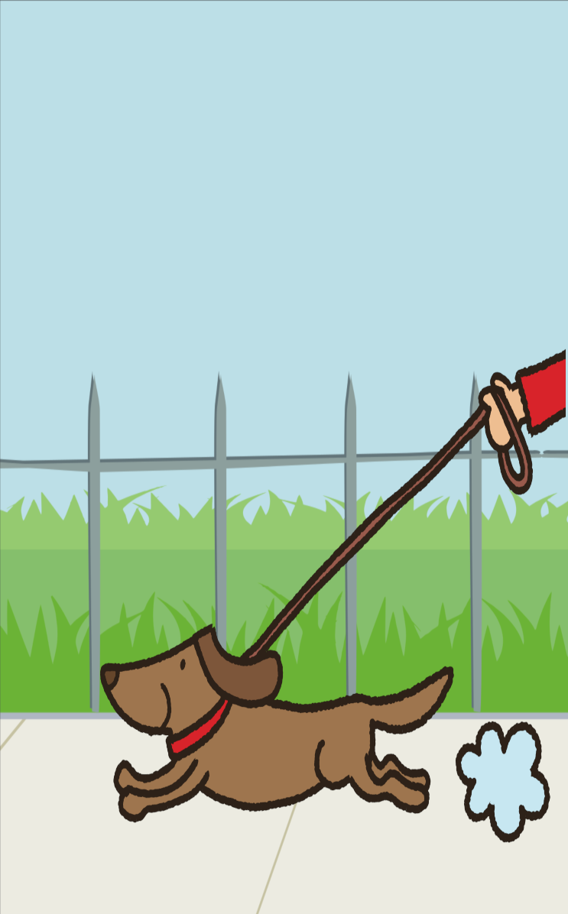

You decided to take your dog on a walk. You can tell that your dog is enjoying the walk greatly. While outside your dog poops at its favorite spot. Since you expected this to happen, you came prepared with a poop bag and you place it in the trash upon arriving home.